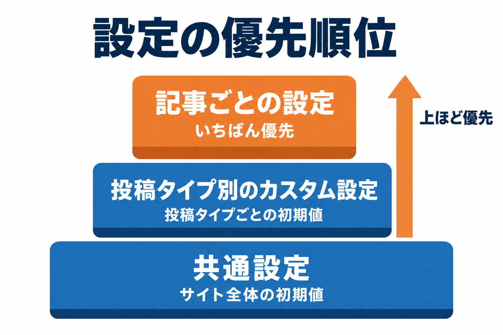
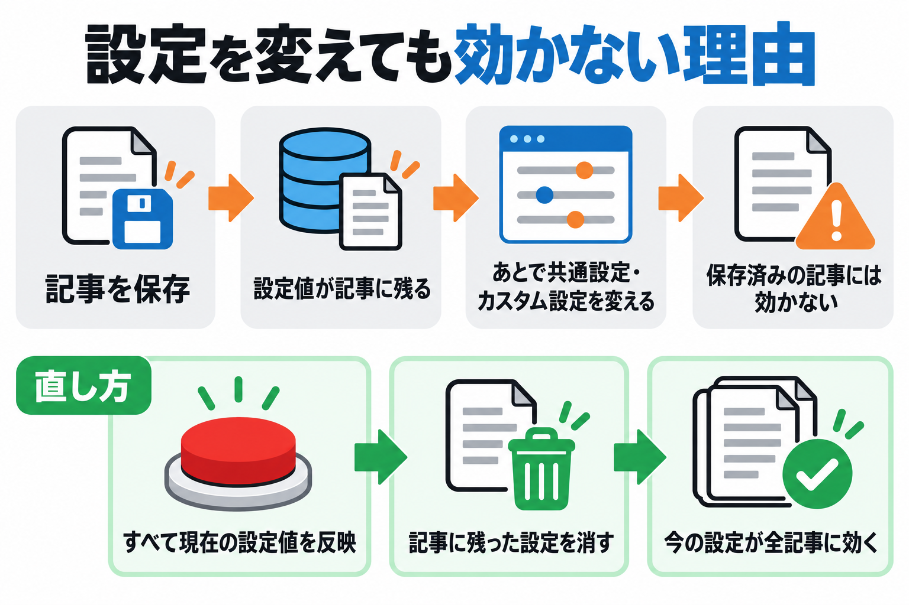
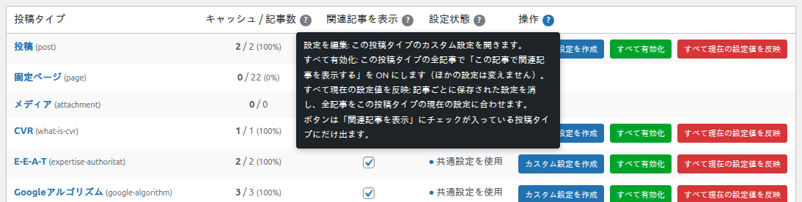

設定の優先順位と反映
関連記事の設定は「共通設定」「投稿タイプ別のカスタム設定」「記事ごとの設定」の 3 段階です。どれが使われるか、設定を変えたのに記事に効かないときはどうするかを説明します。

3 段階の設定
| 段階 | どこで設定するか | 優先度 |
|---|---|---|
| 記事ごとの設定 | 記事の編集画面の「🔗 Kashiwazaki SEO Related Posts」欄（記事ごとの設定） | いちばん高い |
| 投稿タイプ別のカスタム設定 | 「📋 投稿タイプ別設定」タブ →「設定を編集」で「この投稿タイプ専用の設定を使用」（投稿タイプ別設定） | 中 |
| 共通設定 | 「🌐 共通設定」タブ（共通設定） | いちばん低い |
項目ごとに、上の段階に値があればそれを使い、なければ下の段階の値を使います。たとえば記事に「表示件数」が保存されていればそれを、なければカスタム設定の値を、カスタム設定も無ければ共通設定の値を使います。
項目ごとに、どの段階で設定できるか
| 項目 | 共通 | 投稿タイプ別 | 記事ごと |
|---|---|---|---|
| 関連記事を表示する（ON/OFF） | — | 「すべて有効化」でまとめて ON | ○ |
| 関連記事に選ぶ範囲（投稿タイプ・カテゴリ） | ○ | ○ | ○ |
| 表示件数・表示形式・挿入位置 | ○ | ○ | ○ |
| カラーテーマ・見出し・見出しタグ | ○ | ○ | ○ |
| キャッシュ有効期限・AI分析用候補数追加・スライダー表示数 | ○ | ○ | — |
| 関連記事の選び方・モデル | 「🤖 AIのAPI設定」タブでサイト全体に 1 つ | ||
設定を変えても記事に効かない理由

「この記事で関連記事を表示する」が ON の記事を編集画面で保存すると、詳細設定を開いていなくても、関連記事の設定欄の値（そのときの初期値）がすべて記事に保存されます。記事ごとの設定はいちばん優先されるので、あとから共通設定やカスタム設定を変えても、保存済みの記事にはその変更が効きません。
業種別の投稿タイプのカスタム設定で「関連記事に選ぶ範囲」を「業種別」だけにしたのに、一部の記事でブログの記事が出る。→ その記事の編集画面の「対象投稿タイプ」に、以前の「ブログ」が保存されています。カスタム設定の色を青にしたのにオレンジのまま、というのも同じ理由です。
変えた設定を既存の記事に効かせる
投稿タイプの全記事をまとめて合わせる
「📋 投稿タイプ別設定」タブを開きます。
その投稿タイプの行の赤いボタン すべて現在の設定値を反映 を押し、確認のダイアログで OK を選びます。
その投稿タイプの全記事で、記事ごとに保存された設定と関連記事のキャッシュが消え、今のカスタム設定（なければ共通設定）が効くようになります。「この記事で関連記事を表示する」の ON/OFF はそのままです。

記事の編集画面の詳細設定にある赤いボタン「「投稿タイプ名」をすべて現在のデフォルト値に戻す」も同じ操作です。
1 つの記事だけ合わせる
記事の編集画面で「詳細設定を開く」→「この記事を現在のデフォルト値に戻す」を押し、記事を保存します。
緑の「すべて有効化」が変えるのは「この記事で関連記事を表示する」の ON/OFF だけです。記事に保存された範囲や色は変わりません。
「すべて現在の設定値を反映」のあとに記事を編集画面で保存すると、その時点の値がまた記事に保存されます。値は今の設定と同じなので見た目は変わりませんが、あとで設定を変えたときは、もう一度「すべて現在の設定値を反映」を押してください。